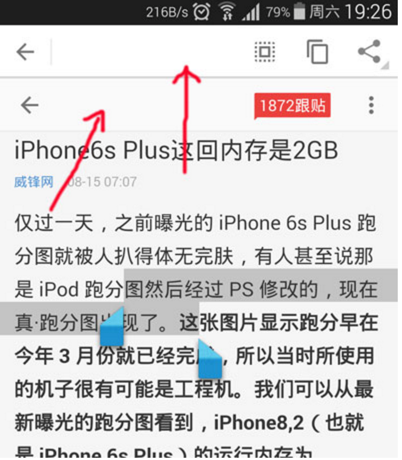
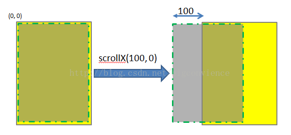
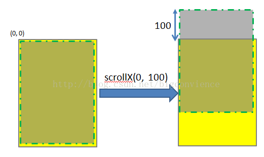
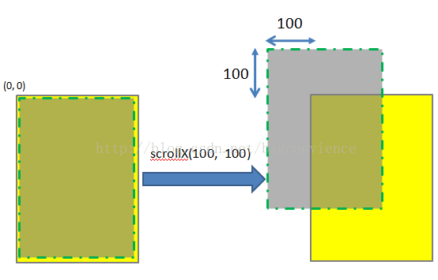
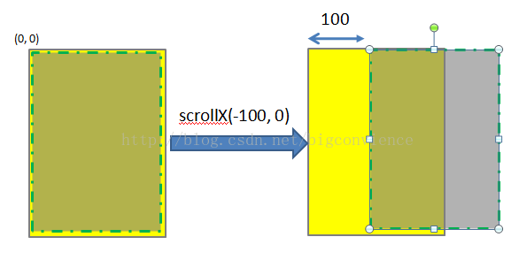

@(【安卓深入思考】)
#Android杂记
[TOC]
##批量统计App里面使用到的权限
写个脚本，然后通过AAPT指令，一步就可以获取所有权限~
##对JAVA集合进行遍历删除时务必要用迭代器
今天同事写了几行类似这样的代码：
|
|
运行出异常:
Exception in thread “main” java.util.ConcurrentModificationException
at java.util.AbstractList$Itr.checkForComodification(AbstractList.java:372)
at java.util.AbstractList$Itr.next(AbstractList.java:343)
at com.bes.Test.main(Test.java:15)
Java新手最容易犯的错误，对JAVA集合进行遍历删除时务必要用迭代器。切记。
其实对于如上for循环，运行过程中还是转换成了如下代码：
|
|
仍然采用的是迭代器，但删除操作却用了错误的方法。如将famous.remove(s)改成it.remove()
则运行正常，结果也无误。
当然如果改成:
|
|
这种方法，也是可以完成功能，但一般也不这么写。因为这种方式会漏掉元素，famous的size变了，会有几个元素遍历不出来！！！
为什么用了迭代码器就不能采用famous.remove(s)操作? 这种因为ArrayList与Iterator混合使用时会导致各自的状态出现不一样，最终出现异常。
我们看一下ArrayList中的Iterator实现:
|
|
基本上ArrayList采用size属性来维护自已的状态，而Iterator采用cursor来来维护自已的状态。
当size出现变化时，cursor并不一定能够得到同步，除非这种变化是Iterator主动导致的。
从上面的代码可以看到当Iterator.remove方法导致ArrayList列表发生变化时，他会更新cursor来同步这一变化。但其他方式导致的ArrayList变化，Iterator是无法感知的。ArrayList自然也不会主动通知Iterator们，那将是一个繁重的工作。Iterator到底还是做了努力：为了防止状态不一致可能引发的无法设想的后果，Iterator会经常做checkForComodification检查，以防有变。如果有变，则以异常抛出，所以就出现了上面的异常。
##Android Window FEATURE
- Window.FEATURE_ACTION_BAR_OVERLAY
使用FEATURE_ACTION_BAR_OVERLAY实现actionbar浮动且透明
如上图所示，谷歌地图的actionbar是透明的，且浮动在整个布局之上，没有占用布局空间。其实要做到这样的效果，我们首先想到的是两个方面：
1.将让actionbar浮动起来。
2.给actionbar一个背景，可以为颜色也可以为图片。
下面我以背景色为颜色举个例子。123getWindow().requestFeature(Window.FEATURE_ACTION_BAR_OVERLAY);ActionBar actionBar = getActionBar();actionBar.setBackgroundDrawable(new ColorDrawable(Color.parseColor("#330000ff")));
google的actionbar是分为上下两栏显示的，上面的代码只能设置顶部actionbar的背景色，为了让下面的背景色一致，还需要添加一行代码：
如果我们不想在代码中设置actionbar背景，而是在style中修改xml，可以自定义actionbar，然后设置下面三个属性：
其中的background和setBackgroundDrawable对应，backgroundSplit和setSplitBackgroundDrawable对应，而backgroundStacked代表的是actionbar选项卡的背景色。
但是actionbar的背景如果设置为纯色，或者为不透明的图片，那么上面的方法无法使actionbar达到透明的效果。注意上面的代码中，我们的颜色值并不是纯色的而是有一定的透明度。#330000ff的前两位代表透明度。
- FEATURE_ACTION_MODE_OVERLAY
关于Android长按出现复制粘贴栏在顶部占位问题解决方法
大家都知道，在Android长按WebView或EditText等组件时，4.0以上的系统顶部会出现复制/粘贴栏（以下使用使用操作栏作为描述），而如果有使用ActionBar，则操作栏就会悬浮在ActionBar上，但如果没有使用ActionBar，则会插入顶部并且占居一定的位置，如果是自定义的顶部栏，那么新插入的操作栏就会影响美观与体验(如下图)。所以，带着这个问题，去研究与分析Activity的界面层次布局，从而找出解决方案。

在研究了一遍ActionBar的界面层次源码后，得到的了解决方法
将操作栏设置为悬浮方式:
1、在Activity使用setContentView方法之前，调用requestWindowFeature(Window.FEATURE_ACTION_MODE_OVERLAY);
2、如果是继承ActionBarActivity，则调用以下方法
supportRequestWindowFeature(WindowCompat.FEATURE_ACTION_MODE_OVERLAY);
##让多个Fragment 切换时不重新实例化
在项目中需要进行Fragment的切换，一直都是用replace()方法来替换Fragment：
public void switchContent(Fragment fragment) {
if(mContent != fragment) {
mContent = fragment;
mFragmentMan.beginTransaction()
.setCustomAnimations(android.R.anim.fade_in, R.anim.slide_out)
.replace(R.id.content_frame, fragment) // 替换Fragment，实现切换
.commit();
}
}
但是，这样会有一个问题：
每次切换的时候，Fragment都会重新实例化，重新加载一边数据，这样非常消耗性能和用户的数据流量。
就想，如何让多个Fragment彼此切换时不重新实例化？
翻看了Android官方Doc，和一些组件的源代码，发现，replace()这个方法只是在上一个Fragment不再需要时采用的简便方法。
正确的切换方式是add()，切换时hide()，add()另一个Fragment；再次切换时，只需hide()当前，show()另一个。
这样就能做到多个Fragment切换不重新实例化：
public void switchContent(Fragment from, Fragment to) {
if (mContent != to) {
mContent = to;
FragmentTransaction transaction = mFragmentMan.beginTransaction().setCustomAnimations(
android.R.anim.fade_in, R.anim.slide_out);
if (!to.isAdded()) { // 先判断是否被add过
transaction.hide(from).add(R.id.content_frame, to).commit(); // 隐藏当前的fragment，add下一个到Activity中
} else {
transaction.hide(from).show(to).commit(); // 隐藏当前的fragment，显示下一个
}
}
}
————Edited 2015.2.7————-
问题一：保存UI与数据的内存消耗
上面所述为避免重新实例化而带来的“重新加载一边数据”、“消耗数据流量”，其实是这个Fragment不够“纯粹”。
Fragment应该分为UI Fragment和Headless Fragment。
前者是指一般的定义了UI的Fragment，后者则是无UI的Fragment，即在onCreateView()中返回的是null。将与UI处理无关的异步任务都可以放到后者中，而且一般地都会在onCreate()中加上setRetainInstance(true)，故而可以在横竖屏切换时不被重新创建和重复执行异步任务。
这样做了之后，便可以不用管UI Fragment的重新创建与否了，因为数据和异步任务都在无UI的Fragment中，再通过Activity 的 FragmentManager 交互即可。
只需记得在Headless Fragment销毁时将持有的数据清空、停止异步任务。
UIFragment.java
public class UIFragment extends Fragment{
@Override
public View onCreateView(LayoutInflater inflater, ViewGroup container,
Bundle savedInstanceState) {
View view = inflater.inflate(R.layout.fragment,
container, false);
return view;
}
…
}
HeadlessFragment.java
public class HeadlessFragment extends Fragment{
@Override
public void onCreate(Bundle savedInstanceState) {
setRetainInstance(true);
}
@Override
public View onCreateView(LayoutInflater inflater, ViewGroup container,
Bundle savedInstanceState) {
return null;
}
…
}
具体实例代码如下:
ApiDemo: FragmentRetainInstance.java
MostafaGazar Sample: PhotosListTaskFragment.java
问题二：Fragment重叠
其实是由Activity被回收后重启所导致的Fragment重复创建和重叠的问题。
在Activity onCreate()中添加Fragment的时候一定不要忘了检查一下savedInstanceState：
if (savedInstanceState == null) {
getFragmentManager().beginTransaction().add(android.R.id.content,
new UIFragment()).commit();
}
多个Fragment重叠则可以这样处理：通过FragmentManager找到所有的UI Fragment，按需要show()某一个Fragment，hide()其他即可！
为了能准确找出所需的Fragment，所以在add()或者replace() Fragment的时候记得要带上tag参数，因为一个ViewGroup 容器可以依附add()多个Fragment，它们的id自然是相同的。
if (savedInstanceState == null) {
// getFragmentManager().beginTransaction()…commit()
}else{
//先通过id或者tag找到“复活”的所有UI-Fragment
UIFragment fragment1 = getFragmentManager().findFragmentById(R.id.fragment1);
UIFragment fragment2 = getFragmentManager().findFragmentByTag(“tag”);
UIFragment fragment3 = …
…
//show()一个即可
getFragmentManager().beginTransaction()
.show(fragment1)
.hide(fragment2)
.hide(fragment3)
.hide(…)
.commit();
}
注: 关于Fragment id的问题建议阅读 FragmentManager中moveToState()源码
##ListView.getCount() 与 ListView.getChildCount()
ListView.getCount()（实际上是 AdapterView.getCount()） 返回的是其 Adapter.getCount() 返回的值。也就是“所包含的 Item 总个数”。
ListView.getChildCount()（ViewGroup.getChildCount） 返回的是显示层面上的“所包含的子 View 个数”。
二者有什么不同？当 ListView 中的 Item 比较少无需滚动即可全部显示时，二者是等价的；当 Item 个数较多需要滚动才能浏览全部的话， getChildCount() < getCount() 其中 getChildCount() 返回的是当前可见的 Item 个数。
其实 Android framework 的这一设计并不难理解：当一些 Item 当前不显示的时候为什么还要保留它们的 View 呢？移动设备的资源有限，“能省则省”嘛。
##图解Android View的scrollTo(),scrollBy(),getScrollX(), getScrollY()
Android系统手机屏幕的左上角为坐标系，同时y轴方向与笛卡尔坐标系的y轴方向想反。通过提供的api如getLeft , getTop, getBottom, getRight可以获得控件在parent中的相对位置。同时，也可以获得控件在屏幕中的绝对位置，详细用法可参考android应用程序中获取view的位置
当我们编写一些自定义的滑动控件时，会用到一些api如scrollTo(),scrollBy(),getScrollX(), getScrollY()。由于常常会对函数getScrollX(), getScrollY()返回的值的含义产生混淆，尤其是正负关系，因此本文将使用几幅图来对这些函数进行讲解以方便大家记忆。
注意：调用View的scrollTo()和scrollBy()是用于滑动View中的内容，而不是把某个View的位置进行改变。如果想改变莫个View在屏幕中的位置，可以使用如下的方法。
调用public void offsetLeftAndRight(int offset)用于左右移动方法或public void offsetTopAndBottom(int offset)用于上下移动。
如：button.offsetLeftAndRignt(300)表示将button控件向左移动300个像素。
scrollTo(int x, int y) 是将View中内容滑动到相应的位置，参考的坐标系原点为parent View的左上角。
调用scrollTo(100, 0)表示将View中的内容移动到x = 100， y = 0的位置，如下图所示。注意，图中黄色矩形区域表示的是一个parent View，绿色虚线矩形为parent view中的内容。一般情况下两者的大小一致，本文为了显示方便，将虚线框画小了一点。图中的黄色区域的位置始终不变，发生位置变化的是显示的内容。

同理，scrollTo(0, 100)的效果如下图所示：

scrollTo(100, 100)的效果图如下：

若函数中参数为负值，则子View的移动方向将相反。

scrollBy(int x, int y)其实是对scrollTo的包装，移动的是相当位置。 scrollTo(int x, int y)的源码和scrollBy(int x, int y)源码自行查找.
可见，mScrollX和mScrollY是View类中专门用于记录滑动位置的变量。这两个函数最终调用onScrollChanged()函数，感兴趣者可以参考他们的源代码。
理解了scrollTo(int x, int y)和scrollBy(int x, int y)的用法，就不难理解getScrollX() 和getScrollY()。这两个函数的源码自行查找。
所以这里的scrollTo和scrollBy移动的其实是里面的内容，这其实也可以解释为什么正值看起来向xy轴反方向移动了，因为相对ViewGroup里面的内容来说，这个ViewGroup其实是向xy轴的正方向移动的，所以相对论的思想在android代码里体现了。
setTranslationX和setTranslationY的参数正负值就是，正数表示向xy轴正方向移动，负数表示向xy轴反方向移动。